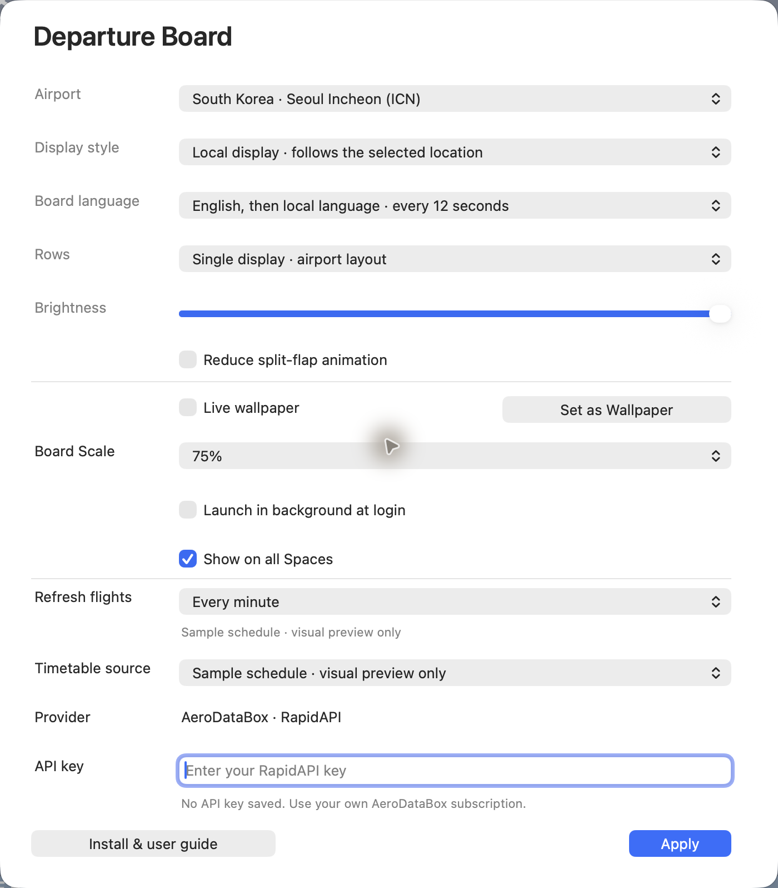
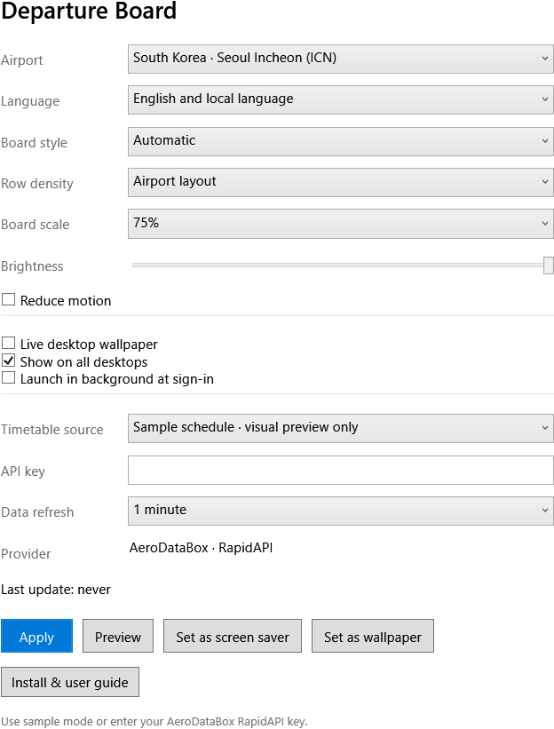
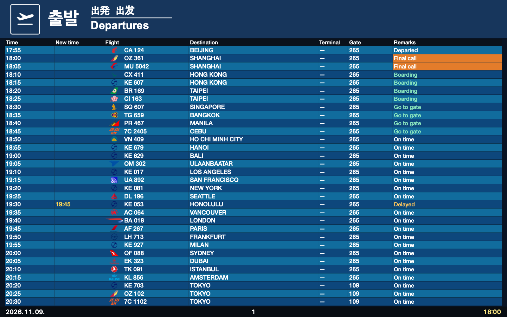
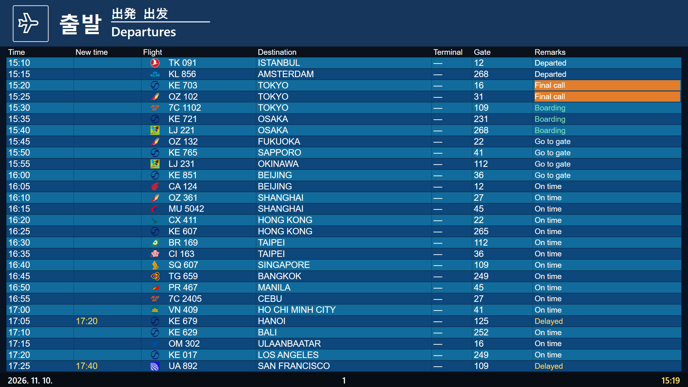

Departure Board installation and user guide
Use an airport departure board as a live desktop wallpaper, screen saver, or preview window. This guide covers installation, settings, multiple displays, updates and troubleshooting on macOS and Windows.
1. Choose your download
| Computer | Download | Support |
|---|---|---|
| Mac, Apple Silicon or Intel | DepartureBoard-version-universal.zip, or the Homebrew cask | macOS 12+. Release ZIPs are Developer ID signed and notarized |
| Windows, Intel or AMD CPU | DepartureBoard-win-x64.zip | Windows 11, unsigned preview |
| Windows, ARM CPU such as Snapdragon | DepartureBoard-win-arm64.zip | Windows 11 ARM64, unsigned preview |
Get files from Assets on the official latest release. On Windows, open Settings → System → About → System type to identify an x64 or ARM-based processor. The Windows packages include the .NET runtime.
Open Install Guide.html in the extracted download to read this guide in your browser. After installation, use Install & user guide in the app. The guide and its pictures work offline; external links and live flight requests need a connection.
2. Install on macOS
Using Homebrew
- Open Terminal. If Homebrew is missing, follow its official instructions at brew.sh.
- Run these commands in order.
brew tap Skyline-23/departure-board
brew install --cask skyline-23/departure-board/departure-board
open -a "Departure Board"- Check that Departure Board Settings opens. The app lives in the menu bar and intentionally has no Dock icon.
- Follow the first-run steps below to try a sample board.
Homebrew installs the app in /Applications and registers the screen saver. Follow your organization's policy if Homebrew is restricted.
Using the ZIP
- Download
universal.zipfrom the official release and extract it in Finder. - Move Departure Board.app into Applications.
- Double-click Departure Board.saver and follow macOS's installation dialog. A per-user installation is available.
- Open Departure Board from Applications. Update the app and screen saver together to keep their versions aligned.
3. Install on Windows
- Download the ZIP for your CPU. Right-click it and choose Extract All before running anything; do not run the installer from inside the compressed-folder view.
- Read Install Guide.html in the extracted folder, then double-click Install.cmd.
- Check that Departure Board Settings opens. Later, search for Departure Board in Start.
- Find the airplane icon in the taskbar's notification area, including its hidden icons. Closing settings leaves the app running there.
Installation is per-user and does not require administrator access. The default folder is %LOCALAPPDATA%\Programs\DepartureBoard. It creates a Start shortcut and selects Departure Board as the screen saver. Set its idle timeout and sign-in behavior in Windows separately.
Verify the download
Download the matching .zip.sha256 file. In PowerShell, run the following and compare the returned hash with the first value in that file. Substitute the ARM64 filename when applicable.
Get-FileHash "$env:USERPROFILE\Downloads\DepartureBoard-win-x64.zip" -Algorithm SHA2564. Set up the first board

macOS settings: choose the board, desktop behavior and flight source in one window. The image uses sample data.

Windows settings offer the same display choices, plus buttons for a preview and screen-saver registration.
- Choose an Airport, such as Seoul Incheon (ICN), Tokyo Haneda (HND), or London Heathrow (LHR).
- Set Timetable source → Sample schedule · visual preview only to try the layouts without a key.
- Choose English, local language, or alternating languages under Language / Board language.
- Select Apply. On Windows, select Preview; on Mac, use Show Board in the menu bar.
- Once the preview looks right, enable wallpaper or choose the screen saver. Connect live data using section 6 if needed.
5. Wallpaper and screen saver
Live wallpaper
Enable Live wallpaper (Mac) or Live desktop wallpaper (Windows), then select Apply. The board updates behind desktop icons while the app runs. Quitting the app removes its live desktop windows.
Show on all Spaces / Show on all desktops controls virtual desktops. It does not combine physical monitors into one stretched board. Each physical monitor receives its own board.
Enable Launch in background at login / sign-in to resume the app after signing in. To stop live wallpaper, turn off its checkbox and apply.
Another wallpaper app, such as Wallpaper Engine, can cover Departure Board. Use one active wallpaper manager at a time when checking the desktop.
Still wallpaper
Set as Wallpaper saves the current board as a system wallpaper image. It remains after the app quits, but its time and flights do not update. Use Live wallpaper for an updating board.
Desktop board content leaves room for the menu bar, Dock or taskbar. The outer margin is intentional. A Windows still image is fitted to the monitor layout when created, so apply it again after changing resolution or monitor arrangement.
Screen saver
macOS: use Screen Saver Settings in the app menu, or search for “screen saver” in System Settings. Choose Departure Board and try the system preview. Set the idle timeout and lock behavior in macOS.
Windows: select Set as screen saver in the app. Search Start for Change screen saver, confirm DepartureBoard is selected, and choose Preview. Set Wait and On resume, display logon screen, then apply.
The screen saver fills the screen and exits on keyboard or mouse input. The app's Preview button opens a normal window; it is separate from the Windows screen-saver preview.

Sample data. Pages, languages and codeshare numbers rotate, so a single image does not show the whole timetable.
6. Connect real flights
- Sign in to RapidAPI.
- Review AeroDataBox plans and activate the subscription you need. Creating a RapidAPI account alone does not activate this API.
- In RapidAPI's Developer Dashboard, copy your app's X-RapidAPI-Key.
- Choose Timetable source → Live flight data in Departure Board, paste the key into API key, and select Apply.
- Check that Last update advances and real flights appear. An empty schedule is different from a key or subscription error.
Keys are stored in macOS Keychain or Windows Credential Manager, not shared with the project. A masked saved key does not need to be pasted again. Never include a key in screenshots or bug reports.
Data refresh / Refresh flights controls the API request interval. New installations default to 5 minutes; saved choices stay unchanged. Frequent requests can consume your plan's allowance faster. Language, page and codeshare changes do not require extra API calls. The app and screen saver share cached flights and a request lock. When the provider returns an error, its retry delay is shared across airports, so switching airports does not repeat a failed request. A tray/menu-bar app without a visible preview, settings window or live wallpaper does not continuously fetch flights. Check the provider's current prices and limits before choosing a plan or interval.
7. Display settings reference
| Setting | Choices or behavior | Guidance |
|---|---|---|
| Airport | 40 profiles | Columns and colors vary by airport |
| Board style / Display style | Automatic, LCD, Split-flap | Automatic uses the selected airport's layout |
| Language / Board language | English, local, alternating | Alternating switches automatically |
| Row density / Rows | Airport layout, 10, 12, 16 | Reduce rows if text is too small |
| Board scale | 50, 65, 75, 85, 100% | Higher values enlarge content; separate from Windows display scaling |
| Brightness | 35–100% | Lower it for a dimmer desktop |
| Reduce motion | Reduce transition effects | Data and page updates continue |
| Data refresh | 1, 5, 15 minutes, 1 or 6 hours | Choose to fit your provider plan |
| Launch in background | Start after signing in | Does not automatically open settings |
| Show on all desktops / Spaces | Follow virtual desktops | Separate from physical extended displays |
Some profiles omit columns. A blank field or dash can mean the provider did not supply a gate, counter or time. Always follow the airport's actual operational information.
8. Multiple monitors and mixed DPI
Open Windows Settings → System → Display and select each screen to inspect its resolution and scale. A 4K screen at 150% next to a 1080p screen at 100% is a mixed-DPI setup. The app's Board scale is independent of these Windows settings.
- Use Extend these displays. Duplicated displays mirror one output and do not validate independent monitors.
- Select Identify and arrange the screens to match their physical positions. Displays can be left of or above the primary screen.
- Check the live wallpaper's header, final row, date and time on every screen, including after moving the taskbar.
- Start the Windows screen-saver preview and check that each screen is covered and mouse input exits normally.
- Move the app's preview window between displays and check text clarity and content boundaries.
- Reapply a still wallpaper after connecting or removing a screen or changing its resolution.
Validation records distinguish virtual-display tests from physical-monitor tests. Increasing one remote-desktop screen's resolution alone does not establish multi-monitor or mixed-DPI coverage.

Captured on a 2560×1440 virtual display at 200%, alongside a 1920×1080 display at 100%. This is virtual-display validation, not a photograph of physical monitors.
9. Update or remove
Mac / Homebrew: update with the following commands. Existing settings and the saved key remain.
brew update
brew upgrade --cask skyline-23/departure-board/departure-boardMac / ZIP: quit the app, then replace both the app and .saver with the new versions. Avoid mixing duplicate ZIP and Homebrew installations.
Windows: extract the new ZIP to a different folder and run Install.cmd. Settings and the key remain. Running the installer from inside the destination installation folder is intentionally rejected; use the fresh extracted download.
Remove on Windows: quit the app and run the installed folder's Uninstall.ps1 using PowerShell. If Departure Board is still the selected screen saver, the previous selection is restored. Settings and credentials remain. For complete removal, quit first, then separately remove %LOCALAPPDATA%\DepartureBoard and the Departure Board entry in Credential Manager.
Remove on Mac: for a Homebrew installation, run brew uninstall --cask skyline-23/departure-board/departure-board. For a ZIP installation, remove the app from Applications and the installed screen saver. Normal removal preserves settings and the key.
10. Troubleshooting
| Symptom | First check |
|---|---|
| Guide does not open | Extract the whole ZIP and keep the Guide folder next to Install Guide.html. After installation use Install & user guide |
| Board keeps moving after settings closes | Expected. Use Quit from the menu bar or tray to stop the app |
| Screen saver is missing | Install the Mac .saver, or run Windows Install.cmd. Windows also offers Set as screen saver |
| No real flights | Check Sample/Live selection, AeroDataBox subscription, key, connection and Last update |
| 401 / 403 / 429 | May indicate key authentication, subscription/permission, or request-limit problems respectively |
| Stuck on Loading or No departures | Check request completion and provider coverage; compare with sample mode |
| Wallpaper does not move | Check Live wallpaper and that the app is running; Set as Wallpaper creates a still image |
| Still wallpaper is cropped | Reapply from the app after monitor, scaling or taskbar changes |
| Windows app will not start | Check x64/ARM64 selection, full ZIP extraction and organization policy |
For a report, include the app version, OS, reproduction steps, each monitor's resolution/scale/position and a screenshot with no API key visible. See diagnostics for log locations. Review logs before sharing them publicly.